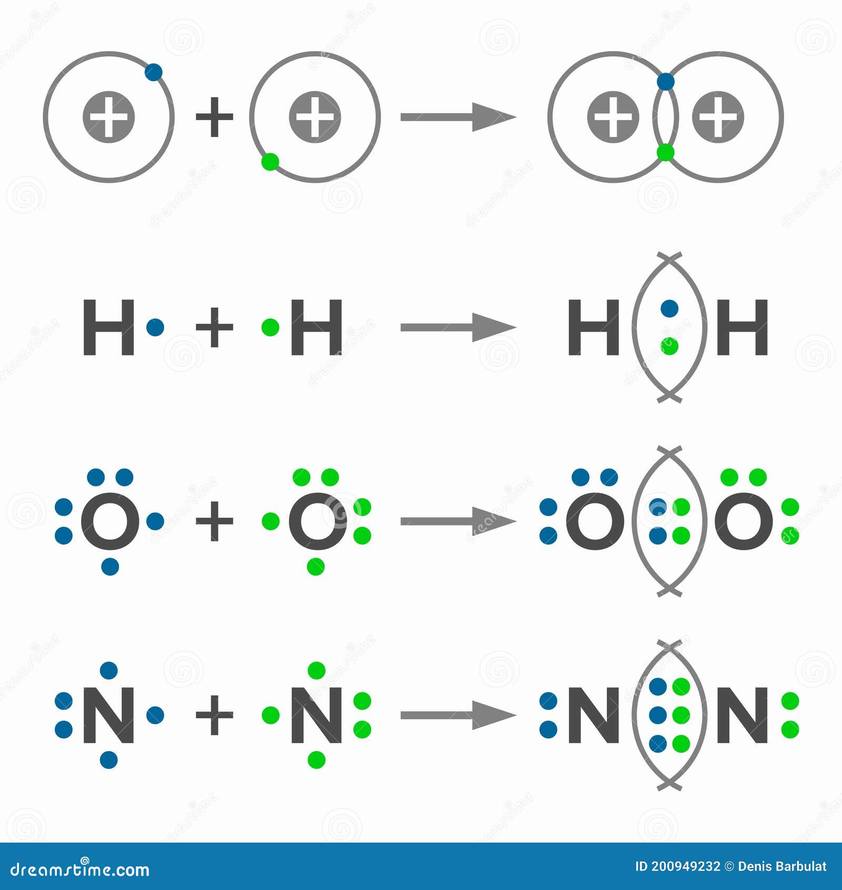

Estudiante: Carlos Hernando Duburque Cardona - 10B
🔗 Enlaces Simples, Dobles y Triples: Clasificación por Orden de Enlace
El orden de enlace indica la cantidad de pares de electrones que comparten dos átomos
en un enlace covalente. Esto determina la longitud, energía y estabilidad del enlace.
Mientras mayor sea el orden del enlace, más fuerte es la atracción entre los átomos.
1. Enlace Simple (σ - sigma)
Definición: Se forma cuando dos átomos comparten UN par de electrones (2 e⁻). Los
electrones se distribuyen entre los dos núcleos de forma lineal.
Características: Es el más débil de los tres, con mayor longitud de enlace y
menor energía de disociación.
Simbología: Se representa con una línea recta: C-C
2. Enlace Doble (σ + π - sigma y pi)
Definición: Se forma cuando dos átomos comparten DOS pares de electrones (4 e⁻).
Uno de los pares forma un enlace σ (sigma) y el otro forma un enlace π (pi).
Características: Mayor fortaleza que el simple, menor longitud de enlace, mayor
energía de disociación. Restringe la rotación.
Ejemplos: O₂ (O=O), CO₂ (O=C=O), CH₂=CH₂ (Etileno), C=C en alquenos.
Simbología: Se representa con dos líneas: C=C
3. Enlace Triple (σ + π + π - sigma y dos pi)
Definición: Se forma cuando dos átomos comparten TRES pares de electrones (6 e⁻).
Uno es enlace σ (sigma) y dos son enlaces π (pi).
Características: El más fuerte de los tres, con menor longitud de enlace y máxima
energía de disociación. Impide completamente la rotación.
Ejemplos: N₂ (N≡N), HC≡CH (Acetileno), C≡C en alquinos.
Simbología: Se representa con tres líneas: C≡C
Comparación Visual

Enlaces Simple (C-C), Doble (C=C) y Triple (C≡C)
📊 Comparación de Propiedades de Enlaces
Propiedad
Enlace Simple
Enlace Doble
Enlace Triple
Pares de Electrones
1 par (2 e⁻)
2 pares (4 e⁻)
3 pares (6 e⁻)
Fortaleza
Débil
Intermedia
Fuerte
Longitud de Enlace
Mayor
Intermedia
Menor
Energía de Disociación
Baja
Media
Alta
Rotación
Libre
Restringida
Bloqueada
⚙️ Mecanismo de Formación de Orbitales
Enlace Sigma (σ): Se forma por el solapamiento directo de orbitales atómicos (frontal). Existe
un máximo de densidad electrónica entre los dos núcleos. Solo un enlace sigma puede existir entre
dos átomos.
Enlace Pi (π): Se forma por el solapamiento lateral de orbitales p (uno por encima y otro por
debajo del eje internuclear). La densidad electrónica se encuentra en dos regiones separadas. Los
enlaces π siempre están ASOCIADOS a un enlace σ.
En enlaces dobles: 1 σ + 1 π
En enlaces triples: 1 σ + 2 π
Simulador de Orden de Enlace
COLOCA LOS ELECTRONES AQUÍ
📝 Simulacro Saber 11
Estas preguntas han sido diseñadas por Carlos Duburque,
siguiendo el modelo de competencias del ICFES (Uso del conocimiento, Explicación de fenómenos e
Indagación).
Prueba ICFES
Estas preguntas han sidos sacadas del ICFES saber 11